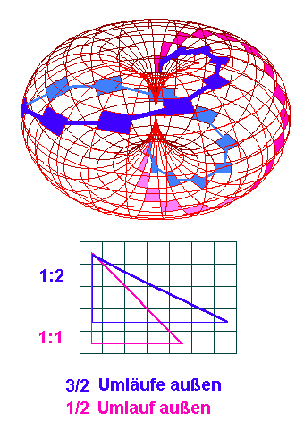
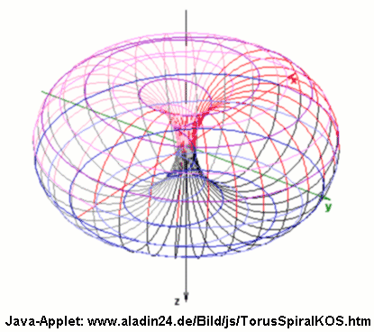
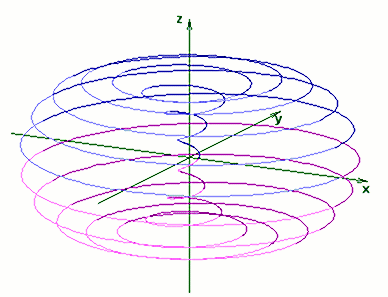

1 Was ist ein Torkado ?
Torus und Ringspule
Inverser Torus
Kräfte und Ladungen in Ätherflüssen
Die Entstehung eines Torkado
Torkado-Applet mit Drehimpulserhaltung?
Nahfeld, Fernfeld und Skalarwellen
Kritik an den Maxwellgleichungen
Dieser und weitere Texte basieren auf einem Äther-Modell als Subteilchen für Atom-Torkados. Das Michelson-Experiment wurde vielfach wiederholt und fast überall wurde eine Erdgeschwindigkeit von 10 km/s ermittelt, was einem zu 2/3 mitbewegten Äther entspricht. Nur weil nicht das erwartete Ergebnis von 30 km/s (ruhender Äther) herauskam, wurde irrtümlich von einer Nullmessung gesprochen /8/.
(Kurzfassung)
Was
ist ein Torkado ?
Das Wort 'Torkado' ist abgeleitet von Tornado, und bildet einen Überbegriff, der
auch auf den Tornado als speziellen Torkado zutrifft.
Was steckt dahinter
?
Es war nötig, ein neues Wort zu finden für eine universelle Bewegungsform,
die sich auf allen Strukturebenen unseres Universums wiederfindet. Es gibt im
Grunde keine geradlinige Bewegung. Jede Bewegung ist - bei genauer Betrachtung
- zum Einen ein Teil eines torkadoförmigen Umlaufs, und zum anderen zusammengesetzt
aus miskroskopisch kleinen torkadoförmigen Vibrationen, die ihrerseits immer wieder
fraktal aus Torkados zusammengesetzt sind. Diese Bewegungsform ist zur dauerhaften
Erhaltung der jeweiligen Struktur notwendig, mit ihr wird Energie aus dem übergeordneten
System hereingepumpt, die die dissipativen Verluste ersetzt.
Das bisherige
Wissen über dreidimensionale Bewegungen - und man weiß, daß alles vibriert - geht
davon aus, daß sich transversale und longitudinale Schwingungen überlagern, beide
in etwa sinusförmig.
Der Fehler beim bisherigen Schwingungskonzept ist, daß
man eigenstabile Schwingkörper annimmt, die einfach da sind, die auch ohne Schwingung
verlustlos existieren. Dabei zeigt die Beobachtung, z.B. der Spektren (Stark-Effekt,
Zeeman-Effekt, Paschen-Back-Effekt), daß sich das Atom sehr wohl an den
äußeren Feldlinien ausrichtet. Warum nicht auch an Feldern, die wir
nicht als solche registrieren, weil sie überall, auch in den Meßgeräten,
sind ?
Keine Schwingungsebene kann sich auf Dauer selbst erhalten, wenn sie
keinen Energienachschub erhält. Das gilt auch für die atomare, molekulare oder
planetare Ebene, um deren Schwingungs-Stabilität wir uns im allgemeinen nicht
zu kümmern brauchen. Ein Hurrican oder Tornado als Studienbeispiel zeigt bereits
das Grundprinzip, auch das Verhalten von Wasser in den Flüssen und Bächen /1/,
und besonders deutlich wird es in künstlich gebauten Maschinen, die diese Schwingungs-Selbsterhaltung
nutzen, wie etwa das Würth-Getriebe /2/, das
höchstwahrscheinlich mit Overunity arbeitet (wenn auch noch nicht im praktikablen
Bereich). Die eingeflossene Energie in solch ein asymmetrisch rotierendes System
kommt natürlich nicht aus dem Nichts, es sind Energien aus den Schwingungen (Torkados)
des einbettenden Systems, also die des Planeten Erde.
Jetzt ist zum ersten Mal das Wort 'asymmetrisch rotierendes System' gefallen. Genau das ist der Torkado. Er ist nicht einfach eine räumliche geschlossene Spirale mit pulsierendem Radius. Dies würde bereits auf eine beliebige Torus-Spirale zutreffen. Ganz wichtig ist, daß diese Radienpulsation nicht sinusförmig ist und daß sie auch zeitlich nicht symmetrisch ist. Damit erhält die Schwingung eine Pumpwirkung. Über den gleichen Sog und Druck kann sich das System auch vorwärts bewegen.
Auf diese Weise müssen
alle Schwingungen in allen Systemen und Hierarchien unsymmetrisch sein und können
deshalb auch gegenseitig angezapft werden, indem die eine oder die andere Dichteschwingungs-Halbwelle
einem Tochtersystem als 'Nahrung' dient. Das Tochtersystem schwingt resonant im
gleichen Takt, und macht sich bei der ungünstigen Halbwelle dicht, wie ein
Ventil oder eine Diode. Oft genügt es, diese Halbwelle 'zu schneiden', sich
zusammenzuziehen (Teilchenzustand), um mit ihr weniger zu interagieren, als mit
der energiespenden Halbwelle, die im ausgebreiteten (Wellen-) Zustand empfangen
wird. So, wie die Goldmarie unter dem Torbogen ihre Schürze ausbreitet, um
das herabfallende Gold einzufangen.
Torus und Ringspule
Ein Dorntorus ist ein Torus ohne inneres Loch. Der Außendurchmesser ist doppelt so groß wie der Schlauchdurchmesser. Wenn man ihn flach durchschneidet und von innen betrachtet, sieht man in der Mitte den 'Dorn'.

Abb.1
Der Torus besteht also aus einem großen Kreis, um den in jeweils senkrechter Ebene unendlich viele kleine Kreise gelegt sind, die den Torusschlauch bilden. Dies ist soweit passend auf das bekannte Magnetfeldmodell für einen ebenen elektrischen Wirbelstrom. Für einen magnetischen Kreiswirbel, wie man ihn im Kern der Ringspulen hat, muß man sich einfach eine dichte Ringspulenwicklung aus Draht vorstellen, die den magnetischen Kreisring in ihrem Inneren erzeugt. Soweit alles bekannt und beschrieben, auch in den Maxwellgleichungen.
Ist wenigstens ein kleines Loch vorhanden, hat der Dorn keine Spitze, sonden einen kleinen Schnittkreis und sind nun die Linien Spiralen statt Einzelkreise, solch einen Torus (Abb.1a) wollen wir im Folgenden betrachten.

Abb.1a
Die Ringspulenwicklung ist eine Spirale, besitzt im Schlauch-Querschnitt
keinen exakten Draht-Kreis, sondern hat selbst im äußeren Teil eine leichte Spiralenverlängerung.
Das heißt:
In jeder Ringspule ist auch das Magnetfeld bereits nicht-kreisförmig,
sondern zumindest gewellt mit der Windungszahl pro Kreis.
Im allgemeinen sagt
man: Zu vernachlässigen bei dichter Wicklung.
Wenn
nun die Windungszahl abnimmt und in die Nähe von 2 oder 1 kommt (Abb.1), wird
deutlich, daß das Magnetfeld im Inneren und Äußeren des Ringkernes auch sehr exotisch
wird. Die Maxwellgleichungen sind für solche Spiralen nicht mehr geeignet.
Und wenn nun die (vorher senkrechte) Windungszahl sogar unter 1 sinkt, also der
Draht ganz flach auf dem Torus liegt, nur sehr wenig geneigt zur großen Kreisringachse,
dann braucht er einige (fast waagerechte) Umkreisungen, bis er wieder in die Nähe
des Ausgangspunktes kommt. Er trifft ihn irgendwann wieder bei rationalen Radienverhältnissen
- die Wicklung könnte geschlossen werden. Bei irrationalen Radienverhältnissen
und dem gleichen Steigungswinkel trifft er ihn nie wieder, analog zu den verschiedenen
Lissajous-Figuren bei zweidimensionalen Schwingungsüberlagerungen.
Inverser Torus
Betrachten wir eine solche geschlossene Torusflachwicklung.

Abb.1b
(siehe KurveB im Java-Applet), etwa aus Draht. Solch eine Torusflachwicklung möchte ich als 'Inverse Wicklung' bezeichnen. Ihre zugehörigen 'senkrechtstehenden' Magnetfeldwirbel, so ihnen auch nach innen Platz gegeben wird, haben die Form einer Spulenwicklung mit sehr großer Windungszahl und leicht pulsierendem Schlauch- und Torusradius. Insgesamt: Ein Torkado.
Hier eine einzige Wirbellinie eines Torkados, etwas vertikal auseinandergezogen, um sie herum der Magnetfeldschlauch als Netz:

Abb.2
http://www.torkado.de/torkadoBeispiele.htm )
Wir sehen aber
an dem Bild auf Abb.2, daß hier noch der Nordpol (oben) in der Größe den Südpol
(unten) übertrifft, diese Asymmetrie ist sehr wichtig für einen Torkado, weil
sonst das Pumpen der Energie nicht wirklich stattfindet.
Es wird klar: Der
Ausgangs-Torus (Mutter-Torus) für einen Torkado darf keinen Torusschlauch mit
Kreisquerschnitt haben, es muß ein eiförmiger Querschnitt sein.
Was machen geladene Teilchen, wenn sie sich bewegen in einem E-Feld oder H-Feld ? Sie bewegen sich in Spiralen ! Nicht in Kreisen. Und selbst wenn sie während der Bewegung, infinitesimal betrachtet, ein kreisförmiges Magnetfeld um sich herum erzeugen, muß ein solches Feld in Wirklichkeit ebenso Spiralen bilden. Es treffen also Spiralen auf Spiralen (Mehrteilchensysteme) und sie haben damit keine Schwierigkeiten. Nur unsere Mathematik hat dafür (noch) kein schnelles Verarbeitungswerkzeug.
Kreuzprodukte
für Induktion, oder für den Poyntingvektor des Energieflusses gehen
von der Rechtwinkligkeit von E und H aus. Diese ineinander verwundenen Spiralen
ändern ständig die Richtung, besonders im Polgebiet tritt jeweils eine
Phasenverschiebung von 90 Grad (für (x-y) und z) ein. Auch im Falle von Hysterese
ist die exakte Rechtwinkligkeit nicht mehr gegeben.
Wie geht man nun am Besten
mathematisch mit den Spiralen um ? Wie
oft sollte man diesen Spiralenzuwachs addieren ? Wie "klein" darf 'infinitesimal'
sein ? Plancklänge, Planckzeit ? Setzen die Quantensprünge die Grenze ? Die Spiralen
pulsieren, und bilden nach größeren und kleineren Skalen hin immer
wieder (fraktal) Torkados. In jeder Ebene, in der sich ein größerer
Torkado schließt, gibt es neue große Quanten, weil wieder verschiedene exzentrische
Rotationen nicht beliebig verschoben werden können, sondern nur mit ganzzahligem
Zuwachs von Umdrehungszahlen, dort ist immer wieder das Wort 'infinitesimal' ungültig.
Aber genau da kann das Verständnis der negentropischen
Selbstinduktion, der Stabilisator der Pumpmechanik, verlorengehen. Und was ist
das liebste Werkzeug eines Theoretischen Physikers ? Die Linearisierung ! Besonders
nichtlineare Gleichungssysteme, und das sind genau genommen alles Schwingungen,
werden über numerische Infinitesimal-Verfahren oder analytisch über
'Exponentialansätze mit ebenen Wellen' gelöst, auch wenn da gar nichts
eben ist. Und nicht sinusförmig, wie wir jetzt wissen. Es wird so gemacht,
weil die Mathematik es so sagt. Und diese Mathematik wurde vor hunderten Jahren
entwickelt, als man die fraktalen Strukturen noch nicht kannte. Benoit Mandelbrot
wurde 20 Jahre lang von seinen Mathematikerkollegen ausgelacht. Jetzt sind fast
wieder 30 Jahre vergangen, aber NICHTS von diesem Wissen wurde in die numerischen
Verfahren intergriert. Die Chaostheorie gilt als Exot und hat noch kaum eine andere
mathematische Fachrichtung beeinflußt. Wann merken die Physiker, daß
ihr Theorie-Werkzeug auf unrealistischer Grundlage steht ?
Die
mathematische Beschreibung der Selbstbildung des Torkado muß eine eigenständige
mathematische Operation werden, die das Kreuzprodukt verallgemeinert. Es sollte
dort mindestens 2 Drehachsen geben, je eine für Haupt- und SubKörper, die
weder senkrecht noch parallel zueinender stehen, und die nur bei passenden Anfangswerten
(+passendem Abstand) dreidimensional schwingende Formen erlauben (Quantisierung
von Energie und Drehimpuls) und dabei einen minimalen äußeren Energiefluß zugunsten
ihrer Stabilität integrieren. Die stabile schwingende Form dieses Hauptkörpers
ist ihrerseits eine neue Körpereinheit, die zu einem größeren schwingenden System
gehört (Sheldrake), und der Subkörper besteht seinerseits aus raumschwingenden
energiepumpenden Subkörpern usw. .
Die Selbstbildung eines Torkados läuft
nach klaren Regeln ab, später theoretisch handhabbar wie das Kreuzprodukt
an der rechten Hand.
Um eine Sinuswelle mit sich selbst zur Auslöschung zu bringen, muss sie sich nur auf einem gekrümmten Weg befinden, der aufgrund der Krümmung die Gegenphase herstellt. Das könnten zwei 90-Grad-Kurven sein in einer Ebene, aber dann braucht man noch eine translative Komponente (Parallelverschiebung, evtl.durch Bewegung). Ist es eine räumliche Kurve, kann die doppel-90-Grad-Drehung "am Platz" geschehen, wie bei einer Schlaufe (oder Kugelgelenk).
Wenn
die Sinuswelle (Spiralweg) einer Teilchenströmung entspricht, wird der Crashkurs
vermieden, indem zusätzlich zum Phasenwechsel eine Radienpulsation stattfindet
(Rückweg innen). Obwohl sozusagen die Amplituden schwanken, wird die Impuls- und
Drehimpuls-Gesamtsumme Null sein, wenn der geometrische Aufbau des Gebildes dies
ermöglicht. Es gibt nur wenige solche Konfigurationen (=Quantisierung), die man
als 'gegenresonant zu sich selbst' bezeichnen kann. Der sogenannte Pirouetteneffekt
(bei Radienverkleinerung in x-y-Ebene) tritt fast nicht auf, weil das Gebilde
dreidimensional ist und der Bahngeschwindigkeitsüberschuss in die v-z-Komponente
ausweicht. Die Winkelgeschwindigkeit bleibt konstant trotz Radienverkleinerung.
Ein 'Nach-oben-Schwingen', entgegen einer äußeren Kraft, wird damit erleichtert,
während das 'Nach-unten-Fallen' bei dem größerem Radius das Gesamtsystem beschleunigt
(offenes System). Es wird damit Energie hineingepumpt, die den Raumwirbel trotz
Verluste in Gang hält.
Als
pdf-Datei
Dieser Text von Gabi Müller steht auf: www.torkado.de/torkado1a.htm
Meine Email-Adresse: info@aladin24.de